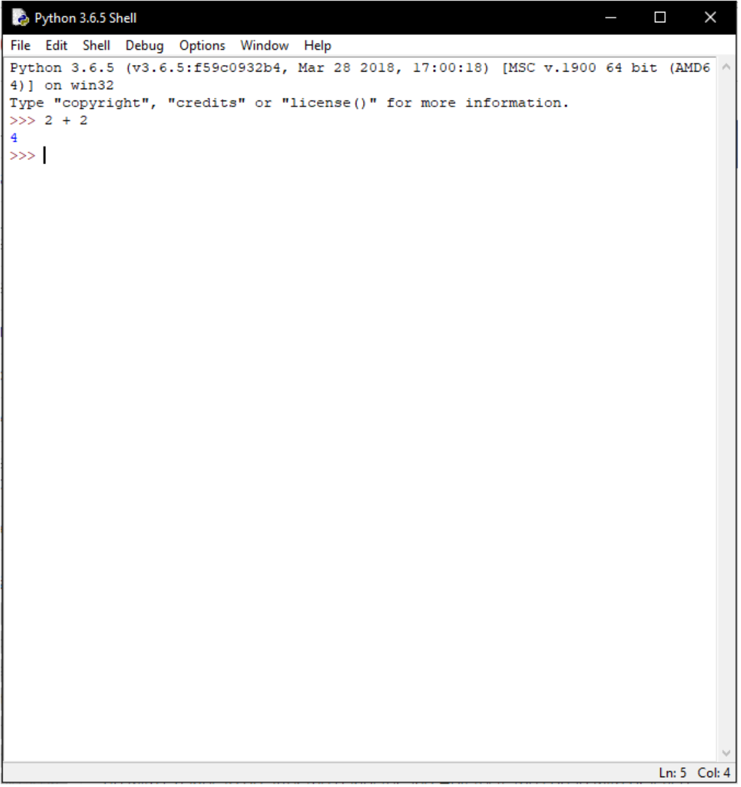

Previous
Next
Using IDLE
Introduction
In this lesson we will get more familiar using IDLE and the shell, as well as going more in depth into what an IDE and an interpreter is.
What is an IDE?
An IDE is an Integrated Development Environment. This is a piece of software that facilitates and help programmers to more efficiently write and debug code, as well as execute and run that code. IDE’s usually consist of 3 main parts: a code editor, build tools, and a debugger. A code editor is essentially an advanced version of notepad that lets you easily type code and can often provide automated code completion/suggestions and syntax highlighting. Although IDLE doesn’t provide any forms of code completion it does use very easily readable syntax highlighting. For example print statements are highlighted in purple, loops are highlighted orange, and strings are highlighted green. Don’t worry if this doesn’t make sense now it will very soon. Build tools usually consist of either an interpreter or a compiler. These are tools that translate human written code into “machine language” code that can be executed by an operating system. A debugger is similar to an interpreter except it allows additional options for testing when running code like halting at a specific line to find the source of an error.
What is an Interpreter?
Python is what is known as a high level language, meaning its easily readable by humans, using largely english words. This is good since it allows people to quickly and efficiently write and understand programs but this is no good for computers, since they only understand 1s and 0s, also known as machine code. To translate high level languages to machine code we need either a compiler or an interpreter. There are many differences between interpreters and compilers but the most important one is that compilers translate all of the source code to machine code before executing the program whereas interpreters translate code one line at a time. Python is an interpreted language meaning it is translated line by line using shell as an interpreter.
Interacting with the Shell?
Find and open IDLE. You will be greeted by the shell. The shell is interactive meaning we can execute code line by line. You can try this by entering some simple
calculations into the shell. For example try typing 2 + 2 and hitting enter. The shell should output 4 as a result.

Now try over calculations, Remember Python follows bidmas rules for arithmetic and its best practice to organise large equations in brackets. Python use * as its
multiplication operator and / as a divide operator. We will go over different arithmetic operations in the coming chapters.